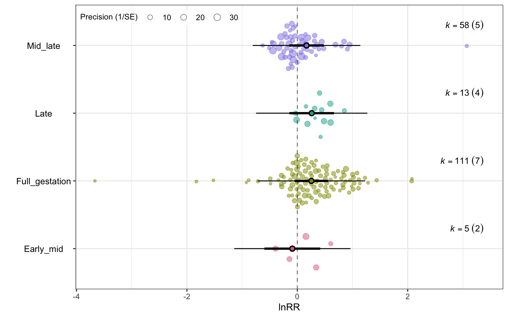
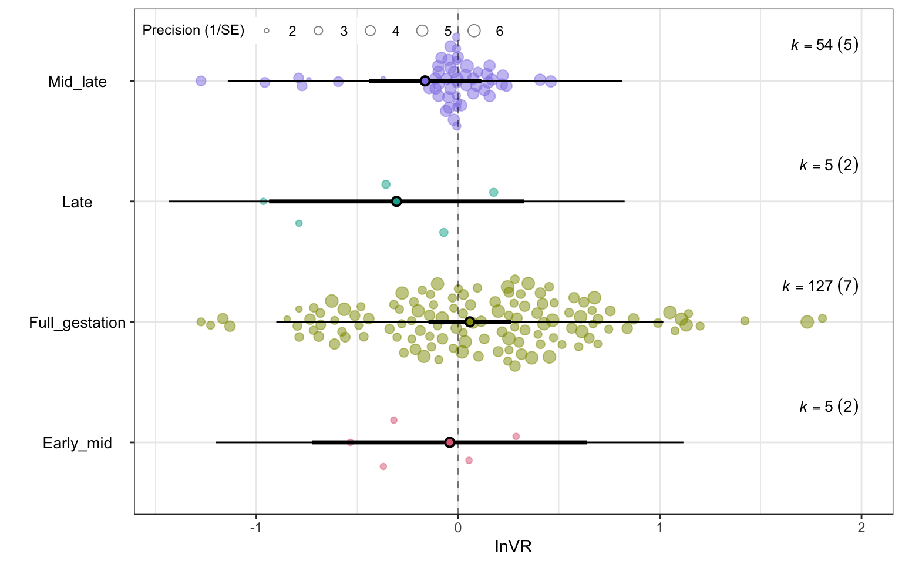
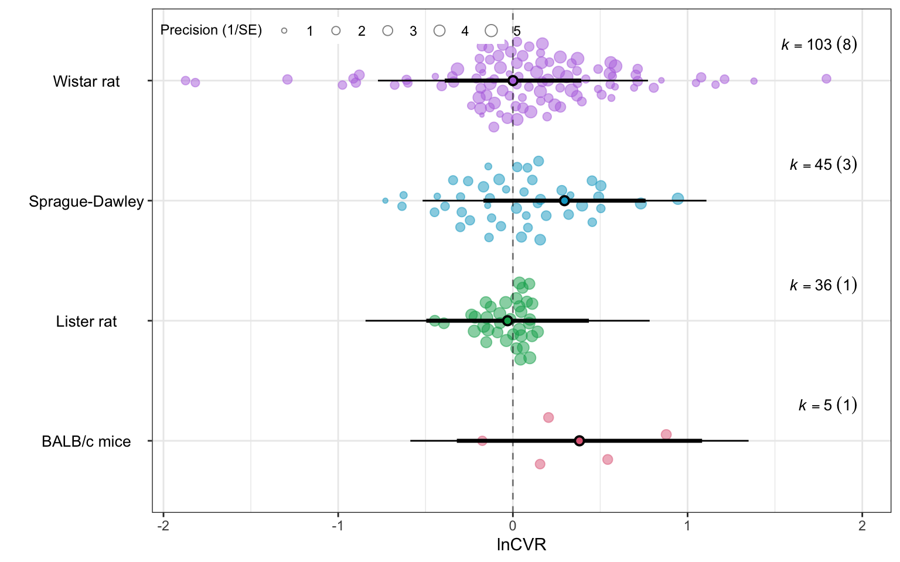
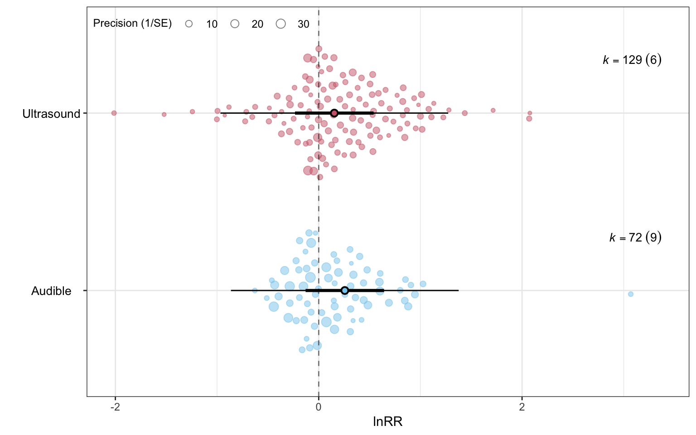
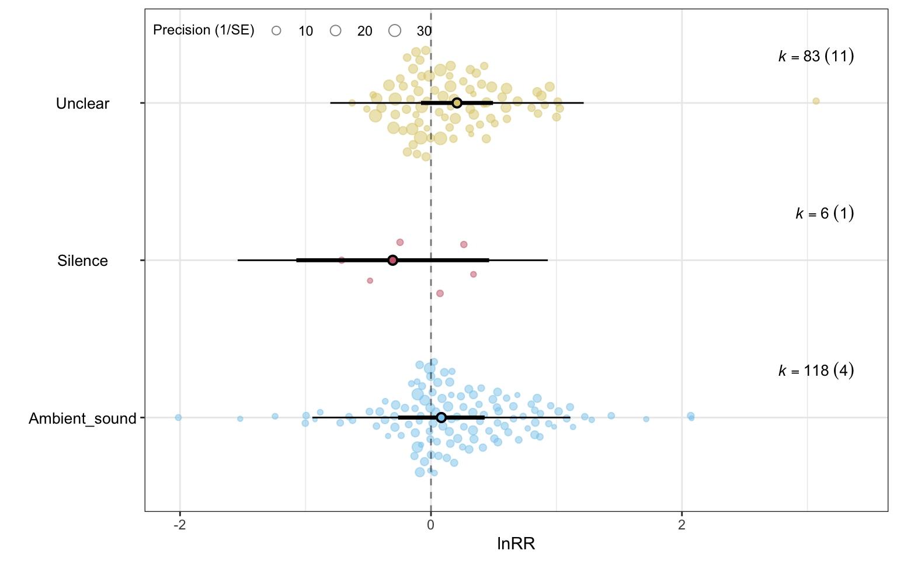
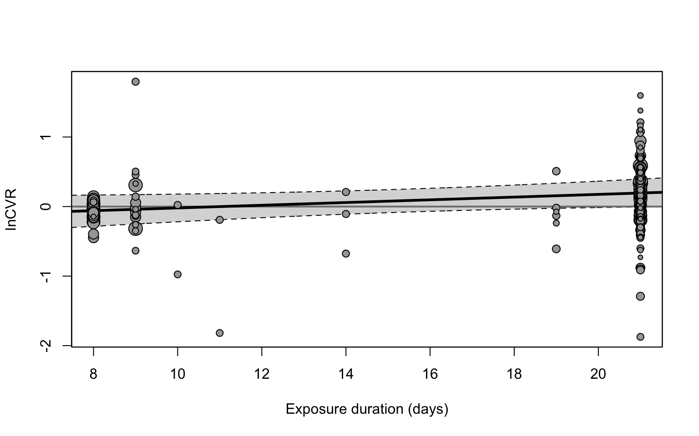
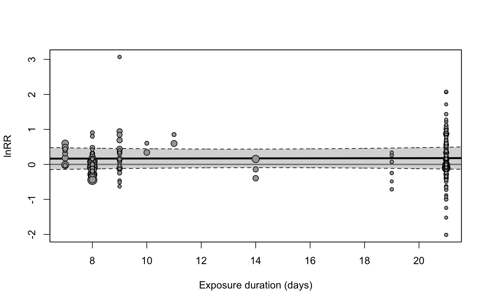
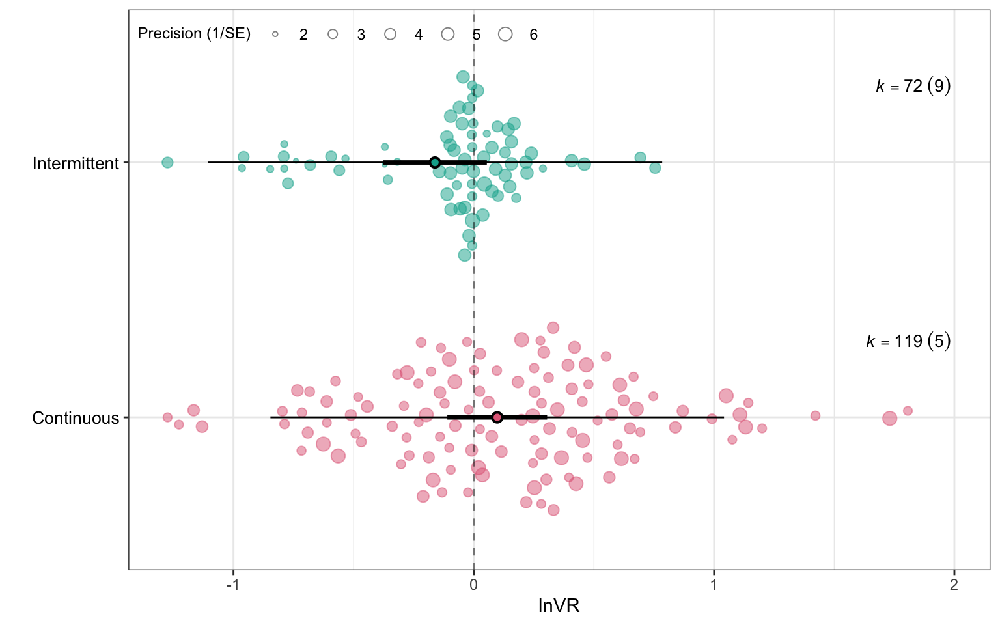
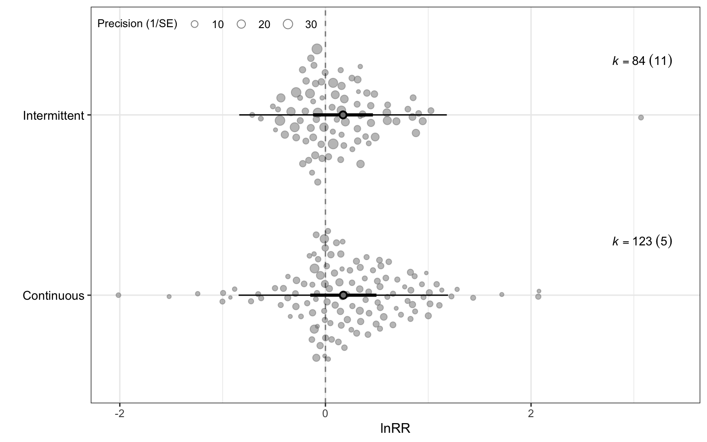

# Load the effect-size database created in Chapter 2.
db <- readr::read_csv(
file.path(derived_dir, "db_effect_sizes.csv"),
show_col_types = FALSE
)
# List the variables required to construct V and fit the models.
required_columns <- c(
"study_id", "es_id", "ex_id", "con_id", "strain",
"ex_n", "c_n", "lnRR", "lnRR_var"
)
# Stop if any required variable is missing.
if (length(setdiff(required_columns, names(db))) > 0) {
stop("The effect-size database does not contain all model variables.")
}
# Confirm that each row has a unique effect-size identifier.
if (anyDuplicated(db$es_id)) {
stop("es_id must identify one effect-size row.")
}
# Construct the complete sampling VCV matrix once.
VCV_lnRR <- metafor::vcalc(
vi = lnRR_var,
cluster = study_id,
grp1 = ex_id,
grp2 = con_id,
w1 = ex_n,
w2 = c_n,
obs = es_id,
rho = 0.5,
data = db
)Uni-moderators
We fit one uni-moderator multilevel meta-regression for each study characteristic. Every model uses lnRR as the response and the same random-effects structure as the overall-effect model: study (study_id), effect size (es_id), and strain (strain). We construct the complete VCV matrix with rho = 0.5. For categorical moderators, we remove levels with fewer than five effect sizes (\(k < 5\)) and subset the corresponding rows and columns of the VCV matrix.
NoteVariable definitions
| Variable | Definition |
|---|---|
| \(k\) | Number of effect sizes in a model. |
V |
Sampling variance-covariance matrix for the lnRR estimates. |
| \(\rho\) | Working correlation for multiple or repeated outcomes that share a group. |
QM |
Omnibus test statistic for the moderator. |
| Marginal \(R^2\) | Proportion of model variance associated with the moderator. |
| Conditional \(R^2\) | Proportion of model variance associated with the moderator and random effects. |
Analysis data and VCV matrix
We load the effect-size database from Chapter 2 and construct one complete VCV matrix using the same code as Chapter 3.
Moderators
The moderator list follows the biological and methodological domains in the protocol. We use the column names from the analysis-ready database.
moderators <- tribble(
~variable, ~label, ~kind, ~missing_label,
"sp_latin", "Species", "categorical", NA_character_,
"gest_stage_ex_standardised", "Gestational exposure stage", "categorical", NA_character_,
"exposure_type", "Exposure type", "categorical", NA_character_,
"noise_type_2", "Noise type", "categorical", "unclear",
"control_conditions", "Control conditions", "categorical", NA_character_,
"offspring_sex", "Offspring sex", "categorical", NA_character_,
"outcome_type", "Outcome type", "categorical", NA_character_,
"assay_type", "Behavioural assay", "categorical", NA_character_,
"offspring_age_d", "Offspring age at testing (days)", "continuous", NA_character_,
"loudness_dB", "Loudness in dB", "continuous", NA_character_
)
# Stop if the database does not contain one of the planned moderators.
if (length(setdiff(moderators$variable, names(db))) > 0) {
stop("The effect-size database does not contain all moderators.")
}
# Display the moderator names used in the models.
moderators |>
dplyr::select(variable, label, kind) |>
knitr::kable(
col.names = c("Database variable", "Moderator", "Type"),
caption = "Uni-moderators in the analysis."
)| Database variable | Moderator | Type |
|---|---|---|
| sp_latin | Species | categorical |
| gest_stage_ex_standardised | Gestational exposure stage | categorical |
| exposure_type | Exposure type | categorical |
| noise_type_2 | Noise type | categorical |
| control_conditions | Control conditions | categorical |
| offspring_sex | Offspring sex | categorical |
| outcome_type | Outcome type | categorical |
| assay_type | Behavioural assay | categorical |
| offspring_age_d | Offspring age at testing (days) | continuous |
| loudness_dB | Loudness in dB | continuous |
For noise_type_2, we treat unclear as a missing acoustic-band value rather than a moderator level. We retain the recorded categories for the other categorical moderators. For loudness_dB, we retain unweighted dB values. Barzegar et al. (2014) reported 95 dBA, so we record its loudness value as missing because dBA and unweighted dB are not directly comparable.
The gest_stage_ex_standardised variable groups the recorded exposure windows as early_mid, full_gestation, mid_late, and late.
Model functions
Prepare the moderator data
For a categorical moderator, we remove levels with \(k < 5\) and subset the same rows and columns from V. For a continuous moderator, we retain finite values and subset V in the same way.
prepare_categorical <- function(data, V, moderator, missing_label = NA_character_, min_k = 5) {
# Start with rows that contain a recorded moderator value.
usable <- !is.na(data[[moderator]])
# Treat a specified text label as missing when required.
if (!is.na(missing_label)) {
usable <- usable & as.character(data[[moderator]]) != missing_label
}
# Count the effect sizes in each moderator level.
level_counts <- data[usable, ] |>
count(level = .data[[moderator]], name = "effect_sizes") |>
mutate(
studies = vapply(
level,
function(x) n_distinct(data$study_id[usable & data[[moderator]] == x]),
integer(1)
),
include = effect_sizes >= min_k
)
# Retain levels represented by at least five effect sizes.
keep_levels <- level_counts |>
filter(include) |>
pull(level)
# Use the same row positions to subset the data and VCV matrix.
idx <- which(usable & data[[moderator]] %in% keep_levels)
dat <- data[idx, , drop = FALSE]
V_subset <- V[idx, idx, drop = FALSE]
# Remove unused factor levels after filtering.
dat[[moderator]] <- droplevels(factor(dat[[moderator]]))
# A categorical moderator requires at least two retained levels.
if (nlevels(dat[[moderator]]) < 2) {
stop("Fewer than two levels remain for ", moderator, ".")
}
list(data = dat, V = V_subset, level_counts = level_counts)
}
prepare_continuous <- function(data, V, moderator) {
# Retain rows with finite moderator values.
idx <- which(is.finite(data[[moderator]]))
# Subset the data and VCV matrix with the same row positions.
dat <- data[idx, , drop = FALSE]
V_subset <- V[idx, idx, drop = FALSE]
# Store the moderator as a numeric variable.
dat[[moderator]] <- as.numeric(dat[[moderator]])
# A continuous moderator requires at least two distinct values.
if (n_distinct(dat[[moderator]]) < 2) {
stop("The moderator does not contain at least two values: ", moderator, ".")
}
list(data = dat, V = V_subset, level_counts = NULL)
}Fit one uni-moderator model
The function below prepares one moderator, subsets the complete VCV matrix, and fits its model. For categorical moderators with at least three retained levels, it also calculates unadjusted Tukey contrasts with a separate no-intercept model.
fit_unimoderator <- function(
data,
V,
moderator,
label,
kind,
missing_label = NA_character_,
min_k = 5
) {
# Apply the appropriate preparation rule for the moderator type.
prepared <- if (kind == "categorical") {
prepare_categorical(data, V, moderator, missing_label, min_k)
} else {
prepare_continuous(data, V, moderator)
}
model_data <- prepared$data
V_subset <- prepared$V
# Fit one multilevel meta-regression with the subsetted VCV matrix.
model <- metafor::rma.mv(
yi = lnRR,
V = V_subset,
mods = reformulate(moderator),
random = list(
~ 1 | study_id,
~ 1 | es_id,
~ 1 | strain
),
test = "t",
method = "REML",
sparse = TRUE,
data = model_data
)
# Draw an orchard plot for a categorical moderator. We draw continuous
# moderators with metafor::regplot() when we display the model results.
model_plot <- if (kind == "categorical") {
orchaRd::orchard_plot(
model,
mod = moderator,
group = "study_id",
xlab = "lnRR",
flip = TRUE,
angle = 0,
legend.pos = "top.left"
)
} else {
NULL
}
contrasts <- NULL
# Calculate unadjusted Tukey contrasts when at least three levels remain.
if (kind == "categorical" && nlevels(model_data[[moderator]]) >= 3) {
# Fit a no-intercept model so that each coefficient represents one level.
no_intercept_model <- metafor::rma.mv(
yi = lnRR,
V = V_subset,
mods = reformulate(moderator, intercept = FALSE),
random = list(
~ 1 | study_id,
~ 1 | es_id,
~ 1 | strain
),
test = "t",
method = "REML",
sparse = TRUE,
data = model_data
)
# Create all pairwise Tukey contrasts among the retained levels.
contrast_matrix <- multcomp::contrMat(
table(model_data[[moderator]]),
type = "Tukey"
)
colnames(contrast_matrix) <- names(coef(no_intercept_model))
# Report the unadjusted p-value for each contrast.
contrasts <- summary(
multcomp::glht(no_intercept_model, linfct = contrast_matrix),
test = multcomp::adjusted("none")
)
}
list(
variable = moderator,
label = label,
kind = kind,
data = model_data,
V = V_subset,
level_counts = prepared$level_counts,
model = model,
r2 = orchaRd::r2_ml(model),
plot = model_plot,
contrasts = contrasts
)
}Fit all uni-moderator models
We call fit_unimoderator() once for each row of the moderator table. The function subsets the complete VCV matrix to match the effect sizes retained for each moderator.
# Apply the same function to each moderator in the table.
unimoderator_results <- purrr::pmap(
moderators,
function(variable, label, kind, missing_label) {
fit_unimoderator(
data = db,
V = VCV_lnRR,
moderator = variable,
label = label,
kind = kind,
missing_label = missing_label,
min_k = 5
)
}
)
# Name each result with its database variable.
names(unimoderator_results) <- moderators$variableModel results
For each moderator, we print the model summary and multilevel \(R^2\). We use orchard plots for categorical moderators and metafor::regplot() for continuous moderators. For categorical moderators with three or more levels, we also print the unadjusted pairwise contrasts.
Species
Model summary
Multivariate Meta-Analysis Model (k = 207; method: REML)
logLik Deviance AIC BIC AICc
-148.0199 296.0398 306.0398 322.6548 306.3413
Variance Components:
estim sqrt nlvls fixed factor
sigma^2.1 0.0290 0.1702 16 no study_id
sigma^2.2 0.1480 0.3848 207 no es_id
sigma^2.3 0.0747 0.2733 5 no strain
Test for Residual Heterogeneity:
QE(df = 205) = 2787.3741, p-val < .0001
Test of Moderators (coefficient 2):
F(df1 = 1, df2 = 205) = 0.6251, p-val = 0.4301
Model Results:
estimate se tval df pval ci.lb
intrcpt 0.3433 0.2661 1.2901 205 0.1985 -0.1813
sp_latinRattus norvegicus -0.2534 0.3205 -0.7906 205 0.4301 -0.8852
ci.ub
intrcpt 0.8679
sp_latinRattus norvegicus 0.3785
---
Signif. codes: 0 '***' 0.001 '**' 0.01 '*' 0.05 '.' 0.1 ' ' 1
Multilevel R-squared
| R2_marginal | R2_conditional |
|---|---|
| 0.0127 | 0.4193 |
Plot

Gestational exposure stage
Model summary
Multivariate Meta-Analysis Model (k = 207; method: REML)
logLik Deviance AIC BIC AICc
-146.4957 292.9914 306.9914 330.1839 307.5658
Variance Components:
estim sqrt nlvls fixed factor
sigma^2.1 0.0394 0.1985 16 no study_id
sigma^2.2 0.1475 0.3841 207 no es_id
sigma^2.3 0.0673 0.2595 5 no strain
Test for Residual Heterogeneity:
QE(df = 203) = 2481.2759, p-val < .0001
Test of Moderators (coefficients 2:4):
F(df1 = 3, df2 = 203) = 0.6973, p-val = 0.5547
Model Results:
estimate se tval df
intrcpt -0.1326 0.2719 -0.4877 203
gest_stage_ex_standardisedfull_gestation 0.2997 0.2399 1.2492 203
gest_stage_ex_standardisedlate 0.3649 0.2621 1.3919 203
gest_stage_ex_standardisedmid_late 0.3176 0.2740 1.1593 203
pval ci.lb ci.ub
intrcpt 0.6263 -0.6687 0.4035
gest_stage_ex_standardisedfull_gestation 0.2130 -0.1733 0.7727
gest_stage_ex_standardisedlate 0.1655 -0.1520 0.8817
gest_stage_ex_standardisedmid_late 0.2477 -0.2226 0.8578
---
Signif. codes: 0 '***' 0.001 '**' 0.01 '*' 0.05 '.' 0.1 ' ' 1
Multilevel R-squared
| R2_marginal | R2_conditional |
|---|---|
| 0.0099 | 0.4255 |
Plot

Pairwise contrasts
We report unadjusted Tukey contrasts between the retained levels.
Simultaneous Tests for General Linear Hypotheses
Multiple Comparisons of Means: Tukey Contrasts
Fit: metafor::rma.mv(yi = lnRR, V = V_subset, mods = reformulate(moderator,
intercept = FALSE), data = model_data, random = list(~1 |
study_id, ~1 | es_id, ~1 | strain), method = "REML", test = "t",
sparse = TRUE)
Linear Hypotheses:
Estimate Std. Error z value Pr(>|z|)
full_gestation - early_mid == 0 0.29969 0.23990 1.249 0.212
late - early_mid == 0 0.36485 0.26213 1.392 0.164
mid_late - early_mid == 0 0.31759 0.27396 1.159 0.246
late - full_gestation == 0 0.06517 0.18743 0.348 0.728
mid_late - full_gestation == 0 0.01790 0.18397 0.097 0.922
mid_late - late == 0 -0.04727 0.22572 -0.209 0.834
(Adjusted p values reported -- none method)
Exposure type
Model summary
Multivariate Meta-Analysis Model (k = 207; method: REML)
logLik Deviance AIC BIC AICc
-148.3259 296.6518 306.6518 323.2668 306.9533
Variance Components:
estim sqrt nlvls fixed factor
sigma^2.1 0.0409 0.2022 16 no study_id
sigma^2.2 0.1481 0.3848 207 no es_id
sigma^2.3 0.0515 0.2269 5 no strain
Test for Residual Heterogeneity:
QE(df = 205) = 2798.4395, p-val < .0001
Test of Moderators (coefficient 2):
F(df1 = 1, df2 = 205) = 0.0005, p-val = 0.9822
Model Results:
estimate se tval df pval ci.lb
intrcpt 0.1745 0.1631 1.0698 205 0.2860 -0.1471
exposure_typeintermittent -0.0033 0.1491 -0.0223 205 0.9822 -0.2973
ci.ub
intrcpt 0.4961
exposure_typeintermittent 0.2906
---
Signif. codes: 0 '***' 0.001 '**' 0.01 '*' 0.05 '.' 0.1 ' ' 1
Multilevel R-squared
| R2_marginal | R2_conditional |
|---|---|
| 0 | 0.3842 |
Plot

Noise type
Model summary
Multivariate Meta-Analysis Model (k = 201; method: REML)
logLik Deviance AIC BIC AICc
-146.1736 292.3472 302.3472 318.8137 302.6580
Variance Components:
estim sqrt nlvls fixed factor
sigma^2.1 0.0311 0.1765 15 no study_id
sigma^2.2 0.1527 0.3907 201 no es_id
sigma^2.3 0.1005 0.3170 4 no strain
Test for Residual Heterogeneity:
QE(df = 199) = 2781.9709, p-val < .0001
Test of Moderators (coefficient 2):
F(df1 = 1, df2 = 199) = 0.5256, p-val = 0.4693
Model Results:
estimate se tval df pval ci.lb ci.ub
intrcpt 0.2567 0.1957 1.3117 199 0.1911 -0.1292 0.6426
noise_type_2ultrasound -0.1033 0.1425 -0.7250 199 0.4693 -0.3844 0.1777
intrcpt
noise_type_2ultrasound
---
Signif. codes: 0 '***' 0.001 '**' 0.01 '*' 0.05 '.' 0.1 ' ' 1
Multilevel R-squared
| R2_marginal | R2_conditional |
|---|---|
| 0.0086 | 0.4676 |
Plot

Control conditions
Model summary
Multivariate Meta-Analysis Model (k = 207; method: REML)
logLik Deviance AIC BIC AICc
-146.3949 292.7897 304.7897 324.6984 305.2161
Variance Components:
estim sqrt nlvls fixed factor
sigma^2.1 0.0284 0.1686 16 no study_id
sigma^2.2 0.1484 0.3852 207 no es_id
sigma^2.3 0.0643 0.2536 5 no strain
Test for Residual Heterogeneity:
QE(df = 204) = 2803.2050, p-val < .0001
Test of Moderators (coefficients 2:3):
F(df1 = 2, df2 = 204) = 1.1664, p-val = 0.3135
Model Results:
estimate se tval df pval ci.lb
intrcpt 0.0824 0.1750 0.4712 204 0.6380 -0.2625
control_conditionssilence -0.3873 0.3762 -1.0295 204 0.3045 -1.1290
control_conditionsunclear 0.1250 0.1414 0.8842 204 0.3777 -0.1537
ci.ub
intrcpt 0.4274
control_conditionssilence 0.3544
control_conditionsunclear 0.4037
---
Signif. codes: 0 '***' 0.001 '**' 0.01 '*' 0.05 '.' 0.1 ' ' 1
Multilevel R-squared
| R2_marginal | R2_conditional |
|---|---|
| 0.0365 | 0.4072 |
Plot

Pairwise contrasts
We report unadjusted Tukey contrasts between the retained levels.
Simultaneous Tests for General Linear Hypotheses
Multiple Comparisons of Means: Tukey Contrasts
Fit: metafor::rma.mv(yi = lnRR, V = V_subset, mods = reformulate(moderator,
intercept = FALSE), data = model_data, random = list(~1 |
study_id, ~1 | es_id, ~1 | strain), method = "REML", test = "t",
sparse = TRUE)
Linear Hypotheses:
Estimate Std. Error z value Pr(>|z|)
silence - ambient_sound == 0 -0.3873 0.3762 -1.030 0.303
unclear - ambient_sound == 0 0.1250 0.1414 0.884 0.377
unclear - silence == 0 0.5123 0.3728 1.374 0.169
(Adjusted p values reported -- none method)
Offspring sex
Model summary
Multivariate Meta-Analysis Model (k = 207; method: REML)
logLik Deviance AIC BIC AICc
-146.7023 293.4046 305.4046 325.3133 305.8310
Variance Components:
estim sqrt nlvls fixed factor
sigma^2.1 0.0315 0.1774 16 no study_id
sigma^2.2 0.1483 0.3851 207 no es_id
sigma^2.3 0.0707 0.2660 5 no strain
Test for Residual Heterogeneity:
QE(df = 204) = 2469.8937, p-val < .0001
Test of Moderators (coefficients 2:3):
F(df1 = 2, df2 = 204) = 0.8184, p-val = 0.4426
Model Results:
estimate se tval df pval ci.lb ci.ub
intrcpt 0.1282 0.1666 0.7695 204 0.4425 -0.2003 0.4567
offspring_sexmale 0.1204 0.1021 1.1790 204 0.2398 -0.0809 0.3216
offspring_sexmixed -0.0483 0.2639 -0.1830 204 0.8550 -0.5686 0.4720
---
Signif. codes: 0 '***' 0.001 '**' 0.01 '*' 0.05 '.' 0.1 ' ' 1
Multilevel R-squared
| R2_marginal | R2_conditional |
|---|---|
| 0.0197 | 0.4197 |
Plot

Pairwise contrasts
We report unadjusted Tukey contrasts between the retained levels.
Simultaneous Tests for General Linear Hypotheses
Multiple Comparisons of Means: Tukey Contrasts
Fit: metafor::rma.mv(yi = lnRR, V = V_subset, mods = reformulate(moderator,
intercept = FALSE), data = model_data, random = list(~1 |
study_id, ~1 | es_id, ~1 | strain), method = "REML", test = "t",
sparse = TRUE)
Linear Hypotheses:
Estimate Std. Error z value Pr(>|z|)
male - female == 0 0.12036 0.10209 1.179 0.238
mixed - female == 0 -0.04828 0.26389 -0.183 0.855
mixed - male == 0 -0.16864 0.25779 -0.654 0.513
(Adjusted p values reported -- none method)
Outcome type
Model summary
Multivariate Meta-Analysis Model (k = 207; method: REML)
logLik Deviance AIC BIC AICc
-147.7141 295.4282 305.4282 322.0432 305.7297
Variance Components:
estim sqrt nlvls fixed factor
sigma^2.1 0.0304 0.1743 16 no study_id
sigma^2.2 0.1467 0.3830 207 no es_id
sigma^2.3 0.0561 0.2369 5 no strain
Test for Residual Heterogeneity:
QE(df = 205) = 2794.4279, p-val < .0001
Test of Moderators (coefficient 2):
F(df1 = 1, df2 = 205) = 2.6601, p-val = 0.1044
Model Results:
estimate se tval df pval ci.lb ci.ub
intrcpt 0.1907 0.1356 1.4061 205 0.1612 -0.0767 0.4581
outcome_typedepression -0.1671 0.1025 -1.6310 205 0.1044 -0.3692 0.0349
intrcpt
outcome_typedepression
---
Signif. codes: 0 '***' 0.001 '**' 0.01 '*' 0.05 '.' 0.1 ' ' 1
Multilevel R-squared
| R2_marginal | R2_conditional |
|---|---|
| 0.0135 | 0.3794 |
Plot

Behavioural assay
Model summary
Multivariate Meta-Analysis Model (k = 204; method: REML)
logLik Deviance AIC BIC AICc
-142.0648 284.1295 300.1295 326.4760 300.8874
Variance Components:
estim sqrt nlvls fixed factor
sigma^2.1 0.0271 0.1647 15 no study_id
sigma^2.2 0.1476 0.3841 204 no es_id
sigma^2.3 0.0822 0.2868 5 no strain
Test for Residual Heterogeneity:
QE(df = 199) = 2757.7007, p-val < .0001
Test of Moderators (coefficients 2:5):
F(df1 = 4, df2 = 199) = 2.0805, p-val = 0.0847
Model Results:
estimate se tval df pval
intrcpt 0.1081 0.1599 0.6758 199 0.5000
assay_typeElevated T Maze (ETM) -0.3822 0.3690 -1.0357 199 0.3016
assay_typeForced Swimming Test (FST) -0.0351 0.1321 -0.2654 199 0.7910
assay_typeOpen Field Test (OFT) 0.1529 0.0821 1.8627 199 0.0640
assay_typeSucrose Preference Test (SPT) -0.1910 0.1631 -1.1710 199 0.2430
ci.lb ci.ub
intrcpt -0.2073 0.4235
assay_typeElevated T Maze (ETM) -1.1099 0.3455
assay_typeForced Swimming Test (FST) -0.2956 0.2254
assay_typeOpen Field Test (OFT) -0.0090 0.3148 .
assay_typeSucrose Preference Test (SPT) -0.5128 0.1307
---
Signif. codes: 0 '***' 0.001 '**' 0.01 '*' 0.05 '.' 0.1 ' ' 1
Multilevel R-squared
| R2_marginal | R2_conditional |
|---|---|
| 0.0533 | 0.4563 |
Plot

Pairwise contrasts
We report unadjusted Tukey contrasts between the retained levels.
Simultaneous Tests for General Linear Hypotheses
Multiple Comparisons of Means: Tukey Contrasts
Fit: metafor::rma.mv(yi = lnRR, V = V_subset, mods = reformulate(moderator,
intercept = FALSE), data = model_data, random = list(~1 |
study_id, ~1 | es_id, ~1 | strain), method = "REML", test = "t",
sparse = TRUE)
Linear Hypotheses:
Estimate
Elevated T Maze (ETM) - Elevated Plus Maze (EPM) == 0 -0.38222
Forced Swimming Test (FST) - Elevated Plus Maze (EPM) == 0 -0.03506
Open Field Test (OFT) - Elevated Plus Maze (EPM) == 0 0.15290
Sucrose Preference Test (SPT) - Elevated Plus Maze (EPM) == 0 -0.19104
Forced Swimming Test (FST) - Elevated T Maze (ETM) == 0 0.34716
Open Field Test (OFT) - Elevated T Maze (ETM) == 0 0.53511
Sucrose Preference Test (SPT) - Elevated T Maze (ETM) == 0 0.19117
Open Field Test (OFT) - Forced Swimming Test (FST) == 0 0.18796
Sucrose Preference Test (SPT) - Forced Swimming Test (FST) == 0 -0.15599
Sucrose Preference Test (SPT) - Open Field Test (OFT) == 0 -0.34394
Std. Error
Elevated T Maze (ETM) - Elevated Plus Maze (EPM) == 0 0.36903
Forced Swimming Test (FST) - Elevated Plus Maze (EPM) == 0 0.13210
Open Field Test (OFT) - Elevated Plus Maze (EPM) == 0 0.08208
Sucrose Preference Test (SPT) - Elevated Plus Maze (EPM) == 0 0.16315
Forced Swimming Test (FST) - Elevated T Maze (ETM) == 0 0.38496
Open Field Test (OFT) - Elevated T Maze (ETM) == 0 0.36703
Sucrose Preference Test (SPT) - Elevated T Maze (ETM) == 0 0.39610
Open Field Test (OFT) - Forced Swimming Test (FST) == 0 0.13459
Sucrose Preference Test (SPT) - Forced Swimming Test (FST) == 0 0.19413
Sucrose Preference Test (SPT) - Open Field Test (OFT) == 0 0.16384
z value
Elevated T Maze (ETM) - Elevated Plus Maze (EPM) == 0 -1.036
Forced Swimming Test (FST) - Elevated Plus Maze (EPM) == 0 -0.265
Open Field Test (OFT) - Elevated Plus Maze (EPM) == 0 1.863
Sucrose Preference Test (SPT) - Elevated Plus Maze (EPM) == 0 -1.171
Forced Swimming Test (FST) - Elevated T Maze (ETM) == 0 0.902
Open Field Test (OFT) - Elevated T Maze (ETM) == 0 1.458
Sucrose Preference Test (SPT) - Elevated T Maze (ETM) == 0 0.483
Open Field Test (OFT) - Forced Swimming Test (FST) == 0 1.396
Sucrose Preference Test (SPT) - Forced Swimming Test (FST) == 0 -0.804
Sucrose Preference Test (SPT) - Open Field Test (OFT) == 0 -2.099
Pr(>|z|)
Elevated T Maze (ETM) - Elevated Plus Maze (EPM) == 0 0.3003
Forced Swimming Test (FST) - Elevated Plus Maze (EPM) == 0 0.7907
Open Field Test (OFT) - Elevated Plus Maze (EPM) == 0 0.0625 .
Sucrose Preference Test (SPT) - Elevated Plus Maze (EPM) == 0 0.2416
Forced Swimming Test (FST) - Elevated T Maze (ETM) == 0 0.3672
Open Field Test (OFT) - Elevated T Maze (ETM) == 0 0.1448
Sucrose Preference Test (SPT) - Elevated T Maze (ETM) == 0 0.6293
Open Field Test (OFT) - Forced Swimming Test (FST) == 0 0.1626
Sucrose Preference Test (SPT) - Forced Swimming Test (FST) == 0 0.4217
Sucrose Preference Test (SPT) - Open Field Test (OFT) == 0 0.0358 *
---
Signif. codes: 0 '***' 0.001 '**' 0.01 '*' 0.05 '.' 0.1 ' ' 1
(Adjusted p values reported -- none method)
Offspring age at testing (days)
Model summary
Multivariate Meta-Analysis Model (k = 207; method: REML)
logLik Deviance AIC BIC AICc
-147.5205 295.0411 305.0411 321.6561 305.3426
Variance Components:
estim sqrt nlvls fixed factor
sigma^2.1 0.0310 0.1762 16 no study_id
sigma^2.2 0.1468 0.3832 207 no es_id
sigma^2.3 0.0716 0.2675 5 no strain
Test for Residual Heterogeneity:
QE(df = 205) = 2749.1852, p-val < .0001
Test of Moderators (coefficient 2):
F(df1 = 1, df2 = 205) = 1.5720, p-val = 0.2113
Model Results:
estimate se tval df pval ci.lb ci.ub
intrcpt 0.3628 0.2132 1.7017 205 0.0903 -0.0575 0.7831 .
offspring_age_d -0.0037 0.0029 -1.2538 205 0.2113 -0.0094 0.0021
---
Signif. codes: 0 '***' 0.001 '**' 0.01 '*' 0.05 '.' 0.1 ' ' 1
Multilevel R-squared
| R2_marginal | R2_conditional |
|---|---|
| 0.0331 | 0.4308 |
Plot

Loudness in dB
Model summary
Multivariate Meta-Analysis Model (k = 201; method: REML)
logLik Deviance AIC BIC AICc
-147.3267 294.6535 304.6535 321.1200 304.9644
Variance Components:
estim sqrt nlvls fixed factor
sigma^2.1 0.0428 0.2070 15 no study_id
sigma^2.2 0.1541 0.3926 201 no es_id
sigma^2.3 0.0534 0.2311 5 no strain
Test for Residual Heterogeneity:
QE(df = 199) = 2748.4572, p-val < .0001
Test of Moderators (coefficient 2):
F(df1 = 1, df2 = 199) = 0.0487, p-val = 0.8255
Model Results:
estimate se tval df pval ci.lb ci.ub
intrcpt 0.1323 0.2472 0.5354 199 0.5930 -0.3551 0.6197
loudness_dB 0.0006 0.0028 0.2207 199 0.8255 -0.0049 0.0061
---
Signif. codes: 0 '***' 0.001 '**' 0.01 '*' 0.05 '.' 0.1 ' ' 1
Multilevel R-squared
| R2_marginal | R2_conditional |
|---|---|
| 6e-04 | 0.3849 |
Plot

NoteSession information
sessionInfo()#> R version 4.5.1 (2025-06-13)
#> Platform: aarch64-apple-darwin20
#> Running under: macOS Tahoe 26.6.2
#>
#> Matrix products: default
#> BLAS: /Library/Frameworks/R.framework/Versions/4.5-arm64/Resources/lib/libRblas.0.dylib
#> LAPACK: /Library/Frameworks/R.framework/Versions/4.5-arm64/Resources/lib/libRlapack.dylib; LAPACK version 3.12.1
#>
#> locale:
#> [1] C.UTF-8/C.UTF-8/C.UTF-8/C/C.UTF-8/C.UTF-8
#>
#> time zone: America/Edmonton
#> tzcode source: internal
#>
#> attached base packages:
#> [1] stats graphics grDevices utils datasets methods base
#>
#> other attached packages:
#> [1] tibble_3.3.1 readr_2.2.0 purrr_1.2.2
#> [4] orchaRd_2.2.1 multcomp_1.4-31 TH.data_1.1-5
#> [7] MASS_7.3-65 survival_3.8-3 mvtnorm_1.4-2
#> [10] metafor_5.0-1 numDeriv_2016.8-1.1 metadat_1.6-0
#> [13] Matrix_1.7-3 knitr_1.51 ggplot2_4.0.3
#> [16] dplyr_1.2.1
#>
#> loaded via a namespace (and not attached):
#> [1] sandwich_3.1-3 generics_0.1.4 lattice_0.22-7 hms_1.1.4
#> [5] digest_0.6.39 magrittr_2.0.5 estimability_2.0.0 evaluate_1.0.5
#> [9] grid_4.5.1 RColorBrewer_1.1-3 fastmap_1.2.0 jsonlite_2.0.0
#> [13] scales_1.4.0 codetools_0.2-20 cli_3.6.6 crayon_1.5.3
#> [17] rlang_1.3.0 bit64_4.8.2 splines_4.5.1 withr_3.0.3
#> [21] yaml_2.3.12 otel_0.2.0 ggbeeswarm_0.7.3 parallel_4.5.1
#> [25] tools_4.5.1 tzdb_0.5.0 mathjaxr_2.0-0 latex2exp_0.9.8
#> [29] pacman_0.5.1 vctrs_0.7.3 R6_2.6.1 emmeans_2.0.4
#> [33] zoo_1.9-0 lifecycle_1.0.5 bit_4.6.0 htmlwidgets_1.6.4
#> [37] vipor_0.4.7 vroom_1.7.1 beeswarm_0.4.0 pkgconfig_2.0.3
#> [41] pillar_1.11.1 gtable_0.3.6 glue_1.8.1 xfun_0.60
#> [45] tidyselect_1.2.1 farver_2.1.2 htmltools_0.5.9 nlme_3.1-168
#> [49] labeling_0.4.3 rmarkdown_2.31 compiler_4.5.1 S7_0.2.2